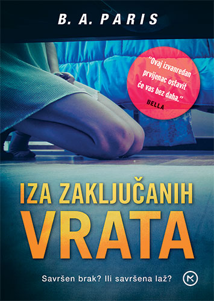
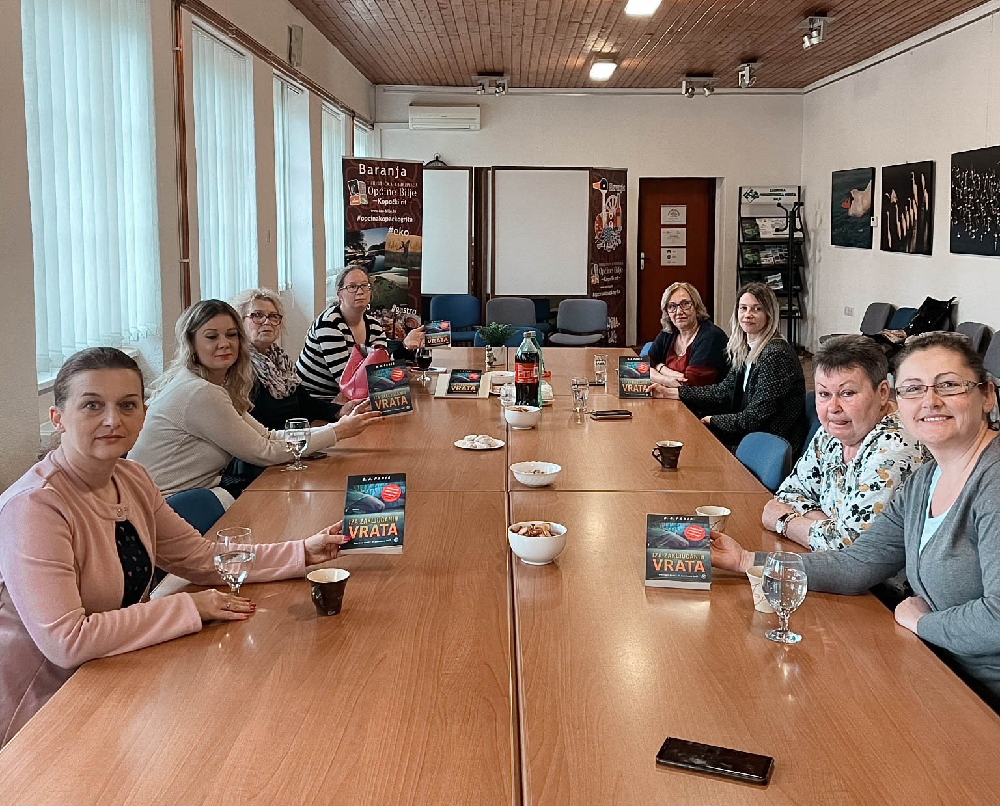
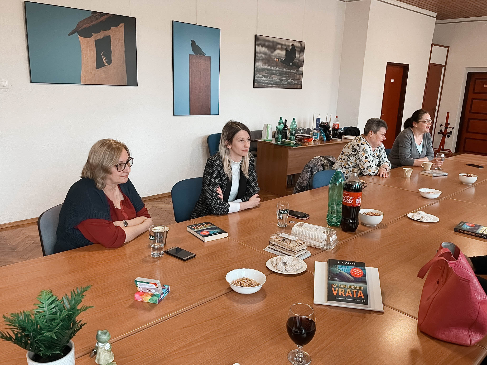
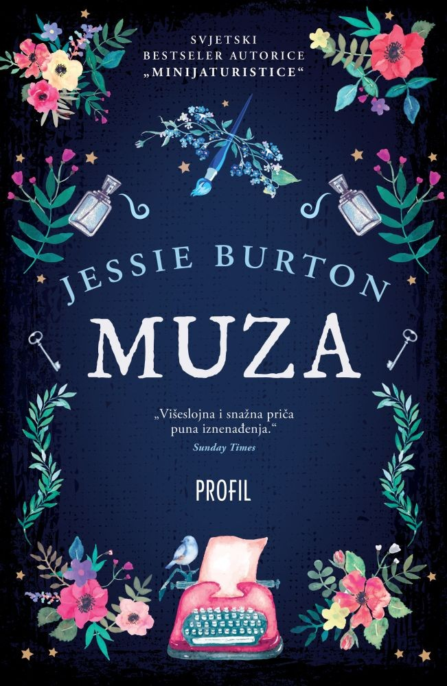
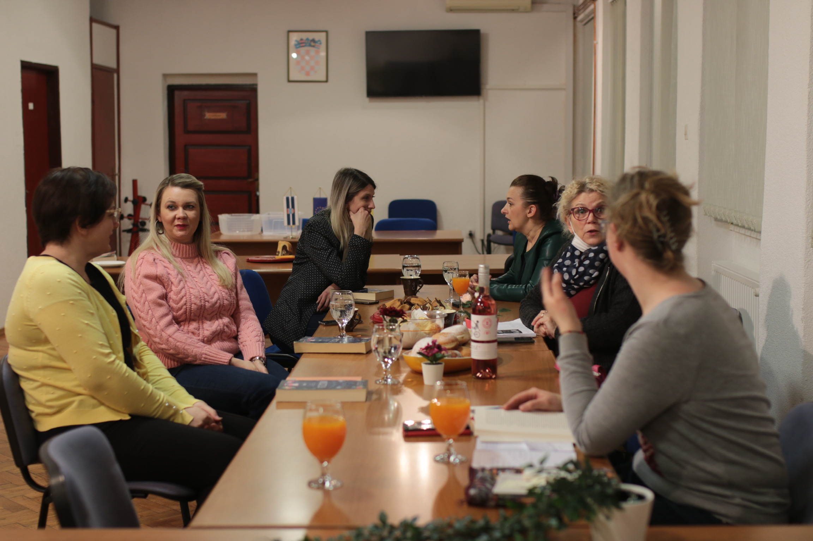
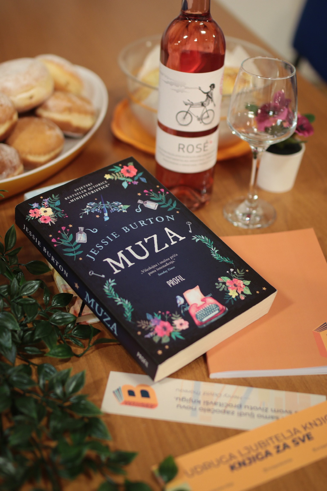
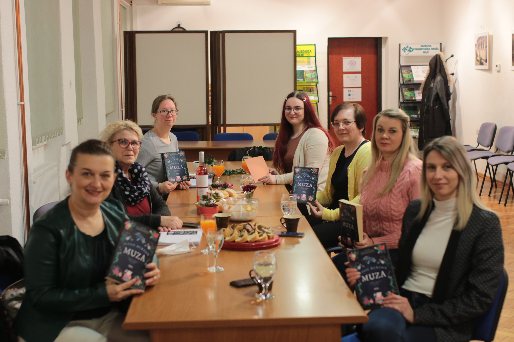

Book club
B. A. Paris, Iza zaključanih vrata
Objavljeno: 16.4.2021.

„Napeto putovanje kroz mračniju stranu ljudske psihe. Krv će vam se zalediti, ali nećete moći prestati čitati. To vam obećavam.“– Sarah Harper, kritičarka Lovereadinga
Prošlo je dva mjeseca od našeg prvog druženja, nije riječ o tome da smo sporo čitali knjigu nego je
potrajalo s nabavljanjem knjige u dovoljnom broju primjeraka da možemo čitati i proslijediti knjige onima
koji nisu pročitali. Iako je knjiga koja je pročitana bila „teška“ mi smo se radovale što se konačno
ponovo susrećemo.
Kratak sadržaj knjige i dobra ocjena na GoodReads-u garantirali su čitanje puno napetosti ali ono što je uslijedilo bilo je daleko više od obične napetosti. Postoje knjige koje vas dotaknu na poseban način, uživite se u radnju, povežete se s likovima i onda stranice okrećete polako da što duže ostanete u tom svijetu, da što duže zadržite njihovu prisutnost. Iza zaključanih vrata je prava suprotnost, ovdje se stranice okreću prebrzo da bi što prije doznali što se dogodilo, kako je sve završilo. Iščekivanje je veliko jer pred nama su redovi koji živopisno opisuju pravi pakao života s psihopatom. On ima izgled i bogatstvo, savršen prikaz, san svake žene, ona ima šarm i eleganciju. Jack i Grace su, čini se savršen par i imaju savršen brak. Nije sve kako se čini, nije sve pravi odraz onoga što vidimo. Iza zaključanih vrata je nešto sasvim drugo. Tada vidimo Jack-a kakav je zaista – bolesni psihopat. Baš kad pomislite da ne može biti gore Jack nadmašuje samog sebe i užasava nas iznova, a svakim novim činom užasa postaje sve gori. Hoće li na kraju uspjeti napraviti sve užase za koje je sposoban? Hoće li netko uspjeti pomoći Grace i Millie?
Kratak sadržaj knjige i dobra ocjena na GoodReads-u garantirali su čitanje puno napetosti ali ono što je uslijedilo bilo je daleko više od obične napetosti. Postoje knjige koje vas dotaknu na poseban način, uživite se u radnju, povežete se s likovima i onda stranice okrećete polako da što duže ostanete u tom svijetu, da što duže zadržite njihovu prisutnost. Iza zaključanih vrata je prava suprotnost, ovdje se stranice okreću prebrzo da bi što prije doznali što se dogodilo, kako je sve završilo. Iščekivanje je veliko jer pred nama su redovi koji živopisno opisuju pravi pakao života s psihopatom. On ima izgled i bogatstvo, savršen prikaz, san svake žene, ona ima šarm i eleganciju. Jack i Grace su, čini se savršen par i imaju savršen brak. Nije sve kako se čini, nije sve pravi odraz onoga što vidimo. Iza zaključanih vrata je nešto sasvim drugo. Tada vidimo Jack-a kakav je zaista – bolesni psihopat. Baš kad pomislite da ne može biti gore Jack nadmašuje samog sebe i užasava nas iznova, a svakim novim činom užasa postaje sve gori. Hoće li na kraju uspjeti napraviti sve užase za koje je sposoban? Hoće li netko uspjeti pomoći Grace i Millie?
„Mnogo je, naizgled, savršenih parova oko nas. Jack i Grace čine se upravo takvima. On je naočit, a usto i bogat muškarac. Ona je lijepa, elegantna žena i savršena domaćica. Njegovo joj bogatstvo dopušta da se ne mora zaposliti, a pažnja koju poklanja njezinoj oboljeloj sestri velikodušna je i dirljiva. Očarali su društvo u kojem se kreću, no naći se s Grace nasamo njezinim novim prijateljicama nemoguća je misija. Ona toliko obožava svojega muža da ne ide nikamo bez njega. Ne može sama izaći na kavu, čak nikada ne odgovara ni na telefonske pozive, pa stoga čudi zašto su na prozorima spavaće sobe rešetke… “Grace ne iskorištava neke moguće situacije da se spasi ali što više čitate morate se uživjeti u njenu situaciju u malo ju bolje razumjeti. Strah je jako velika prepreka. Razgovor o knjizi je bio dinamičan. Sve smo se složile da se radi o knjizi koja budi jezu u kostima, ali i nameće toliko puno pitanja za razmišljanje: Koliko poznajete ljude s kojima se družite? Koliko dugo ljudi mogu glumiti i pretvarati se da su nešto što nisu? Što da primijetite ili saznate da netko proživljava bilo kakvu vrstu nasilja bi ste li reagirali, pomogli, na koji način?



Book club
Jessie Burton, Muza
Objavljeno: 15.2.2021.

„Možeš biti sjajan crtač, rekao je, ali to ne znači ništa ako svijet ne vidiš drugačije“
U želji da ljubav prema knjigama i čitanju prenesemo na druge, da u svom mjestu i okolici dođemo do ljudi
koji su, kao mi, ljubitelji pisane riječi, osnovali smo Knjigu za sve - Udrugu ljubitelja knjiga Bilje.
Nakon razgovora s nekoliko članova Udruge složili smo se da pokrenemo organizirano čitanje i razgovor o
pročitanom, dijeljenje dojmova, osjećaja i emocija koje smo imali čitajući pojedinu knjigu. Druženje u
čitalačkom klubu zamišljeno je kao povezivanje osoba koje dijele strast prema čitanju, ali i stvaranje
osjećaja zajedništva i pripadnosti. Razgovori o knjizi su prioritet, a šalica tople, mirišljave kave je
mali
podsjetnik da se osjećamo ugodno u krugu istomišljenika.
Bilo je teško odabrati prvu knjigu. Trebala je to biti knjiga koja je čisti pogodak „u sridu“, koja će zadovoljiti raznolike čitateljske ukuse, koja će biti poticaj da postanemo željni još knjiga, još čitanja i još druženja. Knjiga koja će osigurati ležernu, ugodnu, ali i dinamičnu raspravu o radnji, likovima, porukama, citatima. Nakon duže potrage uspjeli smo odabrati za prvo druženje našeg čitalačkog kluba, dogovorenog za 12.2.2021. godine, knjigu predivne naslovnice Muza Jessie Burton. Mala čitalačka družina započela je druženje upoznavanjem i kavom. Razgovor o knjizi tekao je potpuno lako i jednostavno jer se knjiga svima svidjela. Svatko od nas pripovijedao je o najdražim dijelovima knjige, o postupcima i reakcijama pojedinih likova: što nam se svidjelo, što odobravamo, a što nam je bilo čudno. Uspoređivali smo citate i rečenice koje smo zapisali u naše dnvenike čitanja, obilježene trakicama u boji ili na papirima umetnutim u knjigu na stranicama na kojima se nalaze rečenice koje su nas dotakle na poseban način i koje će se sigurno ponovo čitati.
Bilo je teško odabrati prvu knjigu. Trebala je to biti knjiga koja je čisti pogodak „u sridu“, koja će zadovoljiti raznolike čitateljske ukuse, koja će biti poticaj da postanemo željni još knjiga, još čitanja i još druženja. Knjiga koja će osigurati ležernu, ugodnu, ali i dinamičnu raspravu o radnji, likovima, porukama, citatima. Nakon duže potrage uspjeli smo odabrati za prvo druženje našeg čitalačkog kluba, dogovorenog za 12.2.2021. godine, knjigu predivne naslovnice Muza Jessie Burton. Mala čitalačka družina započela je druženje upoznavanjem i kavom. Razgovor o knjizi tekao je potpuno lako i jednostavno jer se knjiga svima svidjela. Svatko od nas pripovijedao je o najdražim dijelovima knjige, o postupcima i reakcijama pojedinih likova: što nam se svidjelo, što odobravamo, a što nam je bilo čudno. Uspoređivali smo citate i rečenice koje smo zapisali u naše dnvenike čitanja, obilježene trakicama u boji ili na papirima umetnutim u knjigu na stranicama na kojima se nalaze rečenice koje su nas dotakle na poseban način i koje će se sigurno ponovo čitati.
„Ne prođemo svi onako kako zaslužujemo. Mnogi trenutci koji mijenjaju život – na primjer razgovor s neznancem na brodu – ovise o čistoj sreći. Pa ipak, nitko vam neće napisati pismo ili se baš vama povjeriti bez dobrog razloga. Ona me tome naučila: ako želiš sreću, na nju moraš biti spreman. Moraš odigrati svoju ulogu“Jedna od zanimljivijih ideja koje su bile podijeljene odnosila se na način čitanja ove knjige: čitana je od početka do kraja s radnjom koja se odvija u tridesetim godinama u Španjolskoj, pa potom ponovo od početka s čitanjem radnje koja se odvija krajem šezdesetih godina prošlog stoljeća u Londonu. U knjizi su na vjeran način prikazani problemi tog vremena, vidljivo je da je autorica temeljito istražila društveno-političke teme. Zamršeni obiteljski odnosi i čuvanje tajni koje kad budu otkrivene uzburkaju dugo građene odnose. Na kraju druženja prepravljeni pozitivnim emocijama koje nam je donijelo večer uz knjigu i kavu u ugodnom društvu, složile smo se da susrete svakako ponavljamo i nastavljamo.
„Nije važna istina, ono što ljudi misle postaje istina.“Knjiga koju smo željele sljedeću čitati je Familijari, autorice Stacey Halls. Privremeno smo morale odustati od predložene knjige jer nismo bile u mogućnosti osigurati dovoljan broj primjeraka knjige za neometano čitanje. Prilika nam se ukazala zahvaljujući Mozaik knjizi i njihovoj akciji. Odabrale smo knjigu „Iza zaključanih vrata“, B.A. Paris.


